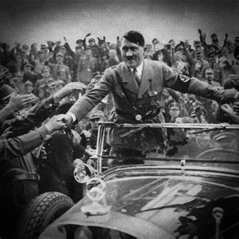

Whole Life
Early Life
Adolf Hitler was born on April 20, 1889, in Braunau am Inn, a small town in Austria-Hungary, near the German border. He grew up in Linz and later moved to Vienna, Austria, in pursuit of his artistic ambitions. Hitler faced a difficult childhood marked by family issues and struggled to make a living as a painter. His experiences during this period would later contribute to his political beliefs and ambitions.
Rise to Power
Following his time in Vienna, Hitler moved to Munich, Germany, and served as a soldier during World War I. After the war, he joined the German Workers' Party, a small nationalist and anti-Semitic political group. Hitler's powerful oratory skills and charisma quickly made him a prominent figure within the party. In 1920, the party was renamed the National Socialist German Workers' Party (Nazi Party), and Hitler's role within the party grew.
Mein Kampf
In 1925, Adolf Hitler wrote and published his autobiographical and political manifesto, "Mein Kampf" (My Struggle). This book outlined his radical and extremist beliefs, his virulent anti-Semitic views, and his vision for the future of Germany. It became a foundational text for the Nazi Party and a blueprint for his political agenda.
Chancellor and Dictator
In 1933, Adolf Hitler was appointed as the Chancellor of Germany by President Paul von Hindenburg, taking on the highest political office in the country. After Hindenburg's death in 1934, Hitler swiftly consolidated his power and declared himself Führer und Reichskanzler, combining the roles of President and Chancellor. This move granted him near-absolute authority over the German government.
Nazi Ideology
The Nazi ideology was centered on extreme nationalism, Aryan racial superiority, and virulent anti-Semitism. Hitler promoted the idea of a pure Aryan race and propagated theories of racial hierarchy. His regime targeted various groups, including Jews, Romani people, disabled individuals, and political dissidents. The implementation of these beliefs led to a wave of persecution and discrimination, ultimately culminating in the Holocaust.
World War II
Under Hitler's leadership, Germany embarked on an aggressive foreign policy that aimed to revise the post-World War I territorial settlements. Hitler sought to unite all German-speaking people into a Greater German Empire, leading to the annexation of Austria (Anschluss), the occupation of Czechoslovakia, and territorial ambitions in Eastern Europe. These actions played a direct role in the outbreak of World War II in September 1939 when Germany invaded Poland.
Holocaust
The Holocaust, one of the most abhorrent chapters in human history, took place under Hitler's regime. It involved the systematic genocide of six million Jews, as well as millions of others, through mass shootings, forced labor, and extermination camps like Auschwitz. This unparalleled tragedy remains a dark stain on the annals of history.
Downfall
As World War II progressed, Germany suffered significant military defeats, and Allied forces closed in on Berlin. In April 1945, as the Soviet Red Army encircled the city, Adolf Hitler and several of his closest associates committed suicide in his underground bunker. Just a few days later, Germany unconditionally surrendered in May 1945, marking the end of the Nazi regime.
Legacy

Adolf Hitler's legacy is one of infamy and infamy alone. His actions during World War II, including the Holocaust and the devastation of Europe, are a stark reminder of the depths to which unchecked power and fanaticism can lead. History remembers him as one of the most reviled and notorious figures of the 20th century, and his name is forever associated with the darkest aspects of human history.
Impacts :-
.jpeg.jpg)
.jpeg.jpg)
.jpeg.jpg)
.jpeg.jpg)
.jpeg.jpg)
.jpeg.jpg)
.jpeg.jpg)
.jpeg.jpg)
.jpeg.jpg)
.jpeg.jpg)